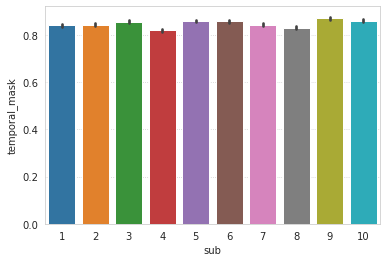
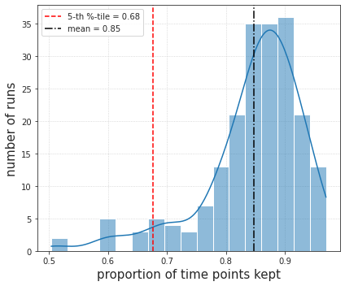
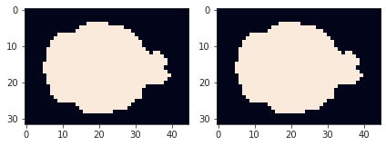
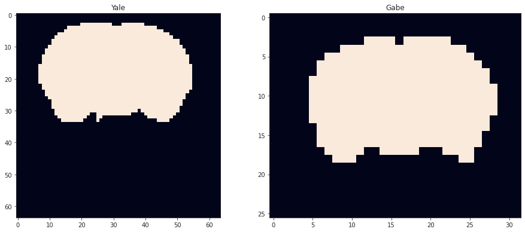

Dec 18th, 2021 (rabies)¶
Motivation: Organize files shared by Gabe. Includes clean time series, brain masks per run, and temporal masks.
# HIDE CODE
import os
import sys
import nibabel as nib
import networkx as nx
from time import time
from pprint import pprint
from copy import deepcopy as dc
from os.path import join as pjoin
from myterial import orange, blue_grey
from IPython.display import display, IFrame, HTML
from matplotlib.colors import rgb2hex, to_rgb
import matplotlib.pyplot as plt
import seaborn as sns
# set style & no interpolalation
import matplotlib
matplotlib.rcParams['image.interpolation'] = 'none'
sns.set_style('whitegrid')
%matplotlib inline
# tmp & extras dir
git_dir = pjoin(os.environ['HOME'], 'Dropbox/git')
tmp_dir = pjoin(git_dir, 'jb-Ca-fMRI/tmp')
extras_dir = pjoin(git_dir, 'jb-Ca-fMRI/_extras')
lfr_dir = pjoin(os.environ['HOME'], 'Documents/workspaces/lfr/binary_overlapping')
# GitHub
sys.path.insert(0, pjoin(git_dir, '_Ca-fMRI'))
from register.atlas import make_tree_graph
from register.parcellation import Parcellation
from analysis.hierarchical import Hierarchical
from analysis.bootstrap import *
from analysis.svinet import *
from analysis.group import *
from analysis.lfr import *
from utils.render import *
from utils.plotting import *
from model.mouse import Mice
from model.configuration import Config
# warnings
import warnings
warnings.filterwarnings('ignore', category=DeprecationWarning)
mice = Mice((192, 4))
mice.setup_anat_data()
meta_dir = pjoin(mice.cfg.base_dir, 'meta_info')
cwd = pjoin(mice.cfg.download_dir, 'native_mot6_FD_DVARS_WM_CSF')
os.listdir(cwd)
['native_brain_mask', 'confound_correction_wf_datasink']
csv_files = []
for p in pathlib.Path(cwd).rglob('*.csv'):
csv_files.append(str(p))
dlist = []
for sub in mice.cfg.sub_ids:
for ses in mice.cfg.ses_ids:
for run in mice.cfg.run_ids:
patterns = [
f"sub-SLC{sub:02d}",
f"ses-{ses:d}",
f"run-{run:d}",
]
key = '_'.join(patterns)
try:
f = next(
e for e in csv_files if
all(k in e for k in patterns)
)
vals = pd.read_csv(f).values.ravel()
dlist.append({
'sub': [sub] * len(vals),
'ses': [ses] * len(vals),
'run': [run] * len(vals),
'key': [key] * len(vals),
'temporal_mask': vals.astype(int),
})
except StopIteration:
print(f"Warning, missing:\t{key}")
df = pd.DataFrame(merge_dicts(dlist))
_ = save_obj(
obj=df,
file_name='temporal_mask',
save_dir=meta_dir,
mode='df',
)
Warning, missing: sub-SLC03_ses-1_run-1
Warning, missing: sub-SLC03_ses-3_run-2
Warning, missing: sub-SLC04_ses-3_run-2
Warning, missing: sub-SLC05_ses-1_run-5
Warning, missing: sub-SLC06_ses-3_run-2
Warning, missing: sub-SLC07_ses-1_run-6
Warning, missing: sub-SLC08_ses-1_run-7
[PROGRESS] 'temporal_mask.df' saved at /home/hadi/Documents/Ca-fMRI/meta_info
df
| sub | ses | run | key | temporal_mask | |
|---|---|---|---|---|---|
| 0 | 1 | 1 | 1 | sub-SLC01_ses-1_run-1 | 0 |
| 1 | 1 | 1 | 1 | sub-SLC01_ses-1_run-1 | 1 |
| 2 | 1 | 1 | 1 | sub-SLC01_ses-1_run-1 | 1 |
| 3 | 1 | 1 | 1 | sub-SLC01_ses-1_run-1 | 1 |
| 4 | 1 | 1 | 1 | sub-SLC01_ses-1_run-1 | 1 |
| ... | ... | ... | ... | ... | ... |
| 121795 | 10 | 3 | 7 | sub-SLC10_ses-3_run-7 | 1 |
| 121796 | 10 | 3 | 7 | sub-SLC10_ses-3_run-7 | 1 |
| 121797 | 10 | 3 | 7 | sub-SLC10_ses-3_run-7 | 1 |
| 121798 | 10 | 3 | 7 | sub-SLC10_ses-3_run-7 | 1 |
| 121799 | 10 | 3 | 7 | sub-SLC10_ses-3_run-7 | 1 |
121800 rows × 5 columns
sns.barplot(data=df, x='sub', y='temporal_mask')
plt.show()

df = df.groupby(['key']).mean()
df
| sub | ses | run | temporal_mask | |
|---|---|---|---|---|
| key | ||||
| sub-SLC01_ses-1_run-1 | 1.0 | 1.0 | 1.0 | 0.936667 |
| sub-SLC01_ses-1_run-2 | 1.0 | 1.0 | 2.0 | 0.643333 |
| sub-SLC01_ses-1_run-3 | 1.0 | 1.0 | 3.0 | 0.858333 |
| sub-SLC01_ses-1_run-4 | 1.0 | 1.0 | 4.0 | 0.503333 |
| sub-SLC01_ses-1_run-5 | 1.0 | 1.0 | 5.0 | 0.790000 |
| ... | ... | ... | ... | ... |
| sub-SLC10_ses-3_run-3 | 10.0 | 3.0 | 3.0 | 0.941667 |
| sub-SLC10_ses-3_run-4 | 10.0 | 3.0 | 4.0 | 0.861667 |
| sub-SLC10_ses-3_run-5 | 10.0 | 3.0 | 5.0 | 0.876667 |
| sub-SLC10_ses-3_run-6 | 10.0 | 3.0 | 6.0 | 0.846667 |
| sub-SLC10_ses-3_run-7 | 10.0 | 3.0 | 7.0 | 0.838333 |
203 rows × 4 columns
fig, ax = create_figure(1, 1, (6, 5))
sns.histplot(df, x='temporal_mask', kde=True, ax=ax)
q = df['temporal_mask'].quantile(q=0.05)
ax.axvline(q, color='r', ls='--', label=f'5-th %-tile = {q:0.2f}')
q = df['temporal_mask'].mean()
ax.axvline(q, color='k', ls='-.', label=f'mean = {q:0.2f}')
ax.set_xlabel('proportion of time points kept', fontsize=15)
ax.set_ylabel('number of runs', fontsize=15)
ax.grid()
ax.legend()
plt.show()

q = df['temporal_mask'].quantile(q=0.05)
q
0.6768333333333333
df.loc[df['temporal_mask'] <= q]
| sub | ses | run | temporal_mask | |
|---|---|---|---|---|
| key | ||||
| sub-SLC01_ses-1_run-2 | 1.0 | 1.0 | 2.0 | 0.643333 |
| sub-SLC01_ses-1_run-4 | 1.0 | 1.0 | 4.0 | 0.503333 |
| sub-SLC02_ses-2_run-5 | 2.0 | 2.0 | 5.0 | 0.608333 |
| sub-SLC02_ses-3_run-5 | 2.0 | 3.0 | 5.0 | 0.590000 |
| sub-SLC03_ses-1_run-3 | 3.0 | 1.0 | 3.0 | 0.603333 |
| sub-SLC04_ses-1_run-4 | 4.0 | 1.0 | 4.0 | 0.661667 |
| sub-SLC05_ses-2_run-2 | 5.0 | 2.0 | 2.0 | 0.643333 |
| sub-SLC07_ses-1_run-5 | 7.0 | 1.0 | 5.0 | 0.676667 |
| sub-SLC07_ses-1_run-7 | 7.0 | 1.0 | 7.0 | 0.590000 |
| sub-SLC07_ses-2_run-1 | 7.0 | 2.0 | 1.0 | 0.518333 |
| sub-SLC10_ses-1_run-5 | 10.0 | 1.0 | 5.0 | 0.608333 |
df.loc[df['temporal_mask'] > 0.95]
| sub | ses | run | temporal_mask | |
|---|---|---|---|---|
| key | ||||
| sub-SLC01_ses-2_run-7 | 1.0 | 2.0 | 7.0 | 0.958333 |
| sub-SLC03_ses-3_run-1 | 3.0 | 3.0 | 1.0 | 0.970000 |
| sub-SLC06_ses-2_run-7 | 6.0 | 2.0 | 7.0 | 0.958333 |
| sub-SLC07_ses-3_run-5 | 7.0 | 3.0 | 5.0 | 0.966667 |
| sub-SLC08_ses-1_run-3 | 8.0 | 1.0 | 3.0 | 0.960000 |
| sub-SLC09_ses-1_run-7 | 9.0 | 1.0 | 7.0 | 0.963333 |
| sub-SLC10_ses-2_run-1 | 10.0 | 2.0 | 1.0 | 0.960000 |
Brain mask¶
mask_files = []
for p in pathlib.Path(cwd).rglob('*_brain_mask.nii.gz'):
mask_files.append(str(p))
mask_files = sorted(mask_files)
masks = {}
for sub in mice.cfg.sub_ids:
for ses in mice.cfg.ses_ids:
for run in mice.cfg.run_ids:
patterns = [
f"sub-SLC{sub:02d}",
f"ses-{ses:d}",
f"run-{run:d}",
]
key = '_'.join(patterns)
try:
f = next(
e for e in mask_files if
all(k in e for k in patterns)
)
masks[key] = ants.image_read(f)
except StopIteration:
print(f"Warning, missing:\t{key}")
Warning, missing: sub-SLC03_ses-1_run-1
Warning, missing: sub-SLC05_ses-1_run-5
Warning, missing: sub-SLC06_ses-3_run-2
Warning, missing: sub-SLC08_ses-1_run-7
good_ctr = 0
for sub in mice.cfg.sub_ids:
for ses in mice.cfg.ses_ids:
key = f"sub-SLC{sub:02d}_ses-{ses:d}"
available = {k: v for k, v in masks.items() if key in k}
for i, j in itertools.combinations(range(len(available)), 2):
m1 = list(available.values())[i].numpy()
m2 = list(available.values())[j].numpy()
if overlap_score(m1, m2) != 1.0 or dice_score(m1, m2) != 1.0:
print(i, j, overlap_score(m1, m2), dice_score(m1, m2))
else:
good_ctr += 1
good_ctr
606
i = 1
j = 3
m1 = masks[f'sub-SLC04_ses-2_run-{i}'].numpy()
m2 = masks[f'sub-SLC04_ses-2_run-{j}'].numpy()
fig, axes = create_figure(1, 2)
axes[0].imshow(m1[..., 15])
axes[1].imshow(m2[..., 15])
plt.show()

masks_ses = {}
for sub in mice.cfg.sub_ids:
for ses in mice.cfg.ses_ids:
_masks = []
for run in mice.cfg.run_ids:
key = mice.get_key(sub, ses, run)
m = masks.get(key)
if m is not None:
_masks.append(m.numpy())
key = mice.get_key(sub, ses)
if len(_masks):
m = functools.reduce(np.logical_and, _masks)
masks_ses[key] = m.astype(bool)
else:
print(f"Warning, missing:\t{key}")
masks_ses['sub-SLC02_ses-1'].shape
(32, 43, 26)
sub, ses
(10, 3)
plt.imshow(masks_ses['sub-SLC04_ses-2'][..., 15])
<matplotlib.image.AxesImage object at 0x7f4c335a49d0>
m200 = mice.mask3d['sub-SLC04_ses-2'].load_ants()
m200
ANTsImage (RAI) Pixel Type : float (float32) Components : 1 Dimensions : (64, 64, 78) Spacing : (0.2, 0.2, 0.2) Origin : (6.4, -6.2, -7.8) Direction : [1. 0. 0. 0. 1. 0. 0. 0. 1.]
m400 = masks['sub-SLC04_ses-2_run-1']
m400
ANTsImage (LPI) Pixel Type : float (float32) Components : 1 Dimensions : (32, 45, 26) Spacing : (0.4, 0.4, 0.4) Origin : (19.0, 7.9, -4.65) Direction : [-1. 0. 0. 0. -1. 0. 0. 0. 1.]
fig, axes = create_figure(1, 2, (13, 5.5))
axes[0].imshow(m200[..., 40].T)
axes[1].imshow(m400[:, 23, :].T[::-1])
axes[0].set_title('Yale')
axes[1].set_title('Gabe')
plt.show()

45 / 78 * 40
23.076923076923073
bold_files = []
for p in pathlib.Path(cwd).rglob('*_bold_combined_cleaned.nii.gz'):
bold_files.append(str(p))
bold_files = sorted(bold_files)
for sub in mice.cfg.sub_ids:
for ses in mice.cfg.ses_ids:
for run in mice.cfg.run_ids:
patterns = [
f"sub-SLC{sub:02d}",
f"ses-{ses:d}",
f"run-{run:d}",
]
key = '_'.join(patterns)
try:
f = next(
e for e in bold_files if
all(k in e for k in patterns)
)
except StopIteration:
print(f"Warning, missing:\t{key}")
Warning, missing: sub-SLC03_ses-1_run-1
Warning, missing: sub-SLC03_ses-3_run-2
Warning, missing: sub-SLC04_ses-3_run-2
Warning, missing: sub-SLC05_ses-1_run-5
Warning, missing: sub-SLC06_ses-3_run-2
Warning, missing: sub-SLC07_ses-1_run-6
Warning, missing: sub-SLC08_ses-1_run-7
img = ants.image_read(f)
img
ANTsImage
Pixel Type : float (float32)
Components : 1
Dimensions : (32, 45, 26, 503)
Spacing : (0.4, 0.4, 0.4, 1.0)
Origin : (19.3, 7.75, -4.95, 0.0)
Direction : [-1. 0. 0. 0. 0. -1. 0. 0. 0. 0. 1. 0. 0. 0. 0. 1.]
plt.imshow(img.numpy()[:, 26, :, 120])
<matplotlib.image.AxesImage object at 0x7faba4f81e20>